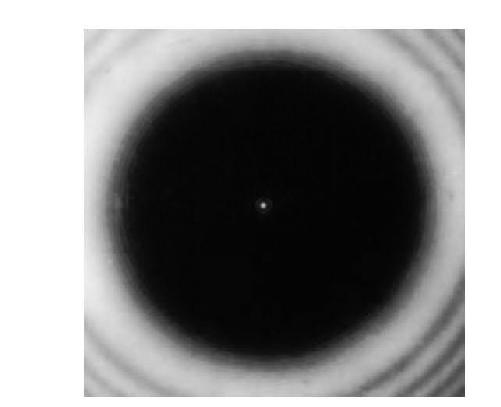
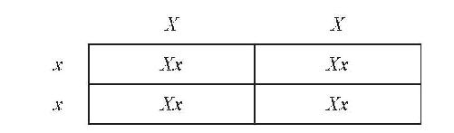
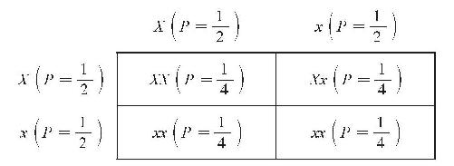
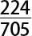
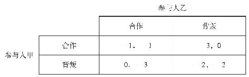
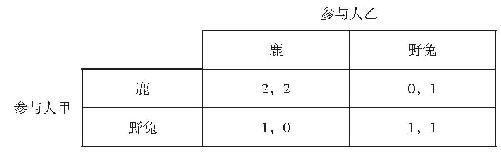
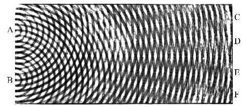
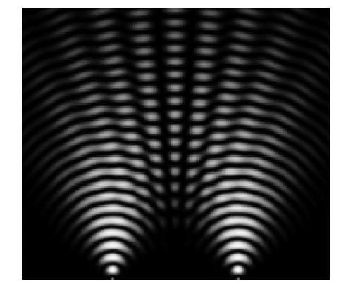
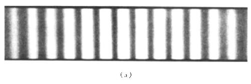
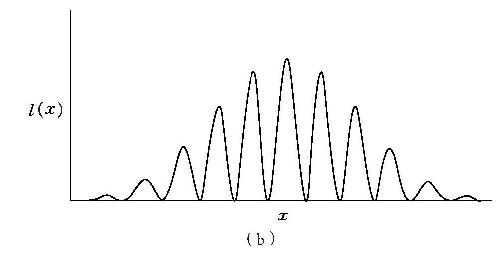

到此，距离本书结束就已经不远了。在收尾之际，我们想看一看概率的解释是怎样对我们理解（有时候是应用）来自人文科学、自然科学和社会科学的理论选择产生影响的。我们将考察来自哲学、生物学、经济学与物理学的四个具体领域：确证理论、孟德尔遗传学、博弈论和量子理论。
中译本边码：143
这是科学哲学家们长期关注的一个问题：当我们说一个理论被证据确证或者否证时，这话究竟是什么意思？毕竟大多数人，包括科学家们都认为，当代科学的核心理论已经得到了人们所能把握的全部证据的确证，尽管他们也认识到，这些理论不能从这样的证据衍推出来。理解确证是如何发生的，对于研究科学方法也可能会有某些影响。例如，一个有趣的争论涉及这个问题：如果仅仅是理论与已知的证据相符， 而非得出新颖的预测 ，理论是否可以得到确证。
现在看来，下面这个想法是很自然的：确证有程度之分，它能够通过数量值进行测量，这是因为，相互竞争的不同理论能够被相同的证据进行不同程度的确证。例如，和T 2 相比，T 1 可能会得到e 更强的确证，而同T 1 或者T 2 相比，T 3 得到e 的确证可能会更强。因此，如果我们把一个理论T 被给定证据e 确证表达为C（T, e ），我们就可以说，在这样的情形下，C（T 3 ，e ）> C（T 1 ，e ）> C（T 2 ，e ）。这里有一个简单的例子。设想这里的理论说的就是从10000次抛掷硬币得到正面朝上这一结果的相对频率。令e 代表“在前100次抛掷当中，正面朝上的相对频率是0.55”。令T 3 是“总体来说，出现正面朝上结果的相对频率将在0.45和0.55之间”，T 1 是“总体来说，出现正面朝上结果的相对频率将在0.49和0.51之间”，T 2 是“总体来说，出现正面朝上结果的相对频率将在0.7和0.72之间”。显然，C（T 3 ，e ）> C（T 1 ，e ）> C（T 2 ，e ）。
中译本边码：144
说出“爱因斯坦的广义相对论有可能是真的”这样的话也是很自然的，这是下面这些说法的非正式表达：“相对于可以把握到的证据 ，爱因斯坦的广义相对论有可能是真的”，以及“爱因斯坦的广义相对论被高度确证”。而这也许并不是巧合。我们应该说“T （相对于e ）是高度可能的”等值于 “T （被e ）高度确证”吗？针对这个问题的一个流行但并非唯一的回答是“是的”，C（T, e ）＝P（T, e ）。这也是一种相当方便的观点，因为如果这样的话，附录B中讨论的带有实例的贝叶斯定理，就可以用来计算确证值是多少了。
如果一个理论的确证就等同于它的概率，那么显然，对概率的解释就会大大影响我们对确证的理解。（很快我们就会讨论到这种影响是如何发生的 。）但是，也有许多人认为确证和概率不 一样 ——也就是坚持认为C（T, e ）≠ P（T, e ）——尽管如此，这些人仍然认为确证应该用概率进行定义 。例如，一种观点是，要想知道某个证据（e ）在多大程度上确证一个理论（T ），可以通过考虑这个理论在多大程度上“预测”了这个证据进行测量：C（T, e ）＝P（e, T ）－P（e ）。（这个算式可能会得到一个负值，这样的话，它就不是 一个概率了。）因此，当涉及科学理论的时候，我们是如何解释概率的，这会对确证的许多（可能和现实的）说明产生重要的影响。
中译本边码：145
概率究竟是如何发挥作用的呢？一个至关重要的方面关系到科学中确证的客观性 。例如，如果所涉及的概率是纯主观的，那么在任何时间和地点，对于科学理论如何被确证这样的问题，就不存在任何客观的 回答了（也许除非这个理论和发现的证据之间不相容 ）；确证值可能会因为理性人的不同而发生显著的差异。因此，说“T 被e 高度确证”时应该同时提出这个问题：“对谁而言？”假如一个科学家和一个牧师，每一方的置信度都满足概率公理（以及其他在第四章提到的一些次要限定——例如遵守衍推关系），那么，只要他们都认可相同的证据，就没有任何明显的理由让我们认为科学家的观点会比牧师的观点更好一些。如果概率被理解为纯粹属于主体间的，某种类似的事情就会是真的；确证值可能会随着群体的变化而发生合理的变化。例如，天主教会和英国皇家天文学会就可能会理性地偏好不同的天文学理论，尽管他们所接受的是相同的证据（例如使用望远镜得到的观察陈述）。
相比较而言，按照概率的逻辑观点（在某些情况下，指的是客观贝叶斯主义观点），证据和理论之间的关系是唯一且固定的 。因此，如果天主教会和英国皇家天文学会对哪个天文学理论可以被所能把握的证据更强地确证存在不同意见，那么这两个群体当中至少有一个必定 是错误的。
为了更加精确地阐明这种差别，让我们考虑上面提到的使用C（T, e ）＝P（e, T ）－P（e ）进行测量的历史场景。这涉及所谓的“泊松亮斑”（Poisson bright spot）。1819年，法国科学院宣布，他们的年度特别奖将会颁发给他们收到的研究光的衍射问题的最佳论文。（从现代的观点看，衍射将在后面关于量子力学的部分进行解释；现在我们不需要涉及其中的细节。）菲涅耳（Augustin Fresnel）是该奖项的竞争者之一，他在所提交的论文当中发展了一种光的波动 理论。然而，评委会的几名成员更加偏好一种光的粒子 理论，根据这个理论，光是由微粒构成的。持这种观点的一名评委泊松（Simeon Poisson）表明，如果菲涅耳的理论是正确的，那么当一个不透明的圆盘被照亮时，一个亮斑将会出现在投影的中心。而他让自己以及他的评委同事们知道，并没有这样一个亮光斑出现。也就是说，这些是以关于影子的日常经验为基础的。（艺术家们也通过几何投影法，把影子画成了实心片状。）由此，他论证说菲涅耳的理论是错误的。然而菲涅耳很幸运，评委会主席阿拉戈（François Arago）坚持要做一下泊松所描述的实验。最后这个亮斑还是被找到了！见图10.1。
中译本边码：146

图10.1 泊松亮斑
经许可复制于《美国物理学杂志》（The American Journal of Physics 44：70 ）。版权归属美国物理教师协会P.M.瑞纳德（P. M. Rinard），1976。
菲涅耳因此获得了特别奖！依据我们关于C（T, e ）的等式，我们可以通过下面这样的阐述来理解这一点。泊松亮斑的存在（e ）至关重要，因为它是菲涅耳光的波动理论（T ）（以及其他没有争议的断言）的一个推论，但它事先是“未被期待的 ”。P（e, T ）＝ 1，而这里的P（e ）极其低，因此C（T, e ）会非常高。［我提到了“其他没有争议的断言”。如果需要，我们可以明确提到背景信息（b ），其中包括我们的确证公式中旧有的证据；也就是说，使用C（T, e, b ）＝P（e, T &b ）－P（e, b ）。我之所以省去b ，只是为了让公式更简单一些。］
我们应该如何理解在表明亮斑存在的这个实验开展之前，上面所用的“未被期待的 ”，也就是P（e ），为什么会是极低的呢？这里就是概率的解释显出其重要性的地方了。评委们难道只是因为碰巧 没有预测到它的存在而对这个预测感到意外 吗？（对于评委群体的成员来说，其个人概率也是绝对低的吗？）可见，这个实验所产生的力量似乎是纯粹心理学上的。另一方面，给定实验之前就可以把握到的信息——也就是按照概率的逻辑或者客观贝叶斯主义观点，如果对P（e ）仅有的理性置信度非常低，这个实验似乎就已经具有某种客观的 力量了。它揭示了一个现象：（基于被认可的证据而 ）提前相信什么，是不合理的 。菲涅耳的理论预测到了这个现象的存在。
中译本边码：147
总而言之，在确证理论的语境中，我们看待概率的方式能够对我们如何理解得到良好确证的当代科学理论的认知地位会产生很大的影响。
19世纪，孟德尔（Gregor Mendel）用豌豆做了大量植株育种实验，并播下了这些现代遗传学的种子——是的，这个蹩脚的双关正是我们想要的！具体而言，他感兴趣的是：不同的特性 是如何得到遗传的。例如，如果一株黄色豌豆和一株绿色豌豆杂交，得到的豌豆会是什么颜色？如果一株高的豌豆和一株矮的豌豆杂交，得到的会是什么？得到的植株会有多高呢？
孟德尔发现，关于这样的特性如何遗传，存在着固定的模式，而这些模式并不（像许多人想象的那样）只是简单的“混合”。例如，当杂交豌豆当中的一方是紫花，而另一方是白花的时候，后代的花并不 是粉色。我们可以通过更详细地考察孟德尔的结果看到，它们或者是白色或者是紫色。
孟德尔首先杂交了白花植株和紫花植株，结果只得到了紫花植株（第一代植株，即G1。然而，之后他允许G1植株自花传粉，并产生了下一代植株（G2）。他发现G2当中大约四分之一是白色，而另外四分之三则是紫色。（他关于G2的具体结果如下：705株是紫色的花，而224株植株是白色的花。因此，G2植株当中是白花的概率似乎是四分之一，G2植株中是紫花的概率似乎是四分之三。）
中译本边码：148
孟德尔通过假定每一株豌豆包含一对 决定其颜色的基因来解释这种现象。他还假定在豌豆植株当中只存在两个类型 的颜色基因（或者两个对偶基因）。让我们称它们为X （代表紫色）和x （代表白色）。孟德尔的想法是：一开始他用来杂交的植株包含了序对XX 和xx 。所得到的植株会从其父母那里分别获得一个基因，因此最终只能是Xx （或者xX ，这是相同的组合，次序无关紧要）。我们可以用一张图表来表明这一点，这个图表被称为“庞尼特方格”（Punnett square，见图10.2）。这是以英国基因学家庞尼特（Reginald Punnett）命名的。（最近我发现我跟他上过同一所学校，当然这是在几十年之后。这个概率是多少呢？）来自精子的可能对偶基因 表示在该图表的一侧——在这里就是来自xx （白花）植株；来自卵子的可能对偶基因表示在该图表的顶部——在这里也就是来自XX （紫花）植株。

图10.2 父母杂交的庞尼特方格
因此，只要X 对偶基因支配着 x 对偶基因，所有后代植株（在G1中）就都会是紫花。而孟德尔认为，他的实验就表明了X 对x 的这种支配性。（通常的做法是用大写字母表示显性对偶基因，用小写字母表示隐性对偶基因。）
中译本边码：149
现在，当G1中的植株（通过自花传粉）再生产的时候，得到XX 后代和xx 后代的可能性如图10.3所示。更精确地说，精子和卵子可能同时既包含了X 对偶基因，或同时包含了x 对偶基因。因此，白花后代（xx ）会再次出现。
你会看到，概率会在图10.3当中标记出来。我的想法是：精子包含X 的概率等于精子包含x 的概率，并且精子只能包含X 或者x 。如把上面句子中的“精子”换成“卵子”，则同理。因此，每个内部方格的概率——正如我们将会看到的，它是通过相关行（精子对偶基因）的概率与相关列（卵子对偶基因）的概率相乘来确定的——也是相等的。因为Xx 出现两次，所以它的总概率是二分之一；XX 和xx 的概率都分别等于四分之一。

图10.3 G1自花传粉的庞尼特方格
现在让我们来考虑一下该如何解释这些概率。这是一个很有意思的事例，因为我认为只有唯一一种正确的解释。我的论证如下。首先，使用基于世界的概率是恰当的，因为我们正在处理这个世界上真实存在的频率，我们想要解释 的正是这种频率的存在。我想这样来考虑问题。（假定两种类型的对偶基因负责解释初始植株的颜色，在我们所讨论的每个豌豆植株中，这样的对偶基因的序对是存在的，这些我们在上面讨论过。）以下情况反而本可能是真的：精子更可能携带x 而不是X ，而卵子同样更可能携带x 而不是X 。也就是说，由于某个原因，x 比X 可能更容易被携带。于是，在孟德尔的实验当中，在G1自花传粉阶段，xx （白花）后代的频率（可能，如果稳定性法则成立的话）将会大大提高。因此，所测量的频率是一个有趣的经验事实。
中译本边码：150
其次，让我们来考虑一下：哪一种基于世界的解释是合适的。我们要说这些概率正是 实际的频率吗？不会，因为实际频率和我们想要的数字还是不一样的（例如，

不是 ）。这样的话，我们要说它们是假定式频率吗？要想解释
为什么假定式频率会取这些值，那就只能接受根本就不存在倾向性这个结论了。（应当承认，我们可以
接受倾向性的存在，但却坚持认为这些不应该被称为“概率”。但在这里我们不打算认真考虑这种可能性，因为这会大大分散注意力。）因此，在转回到相对频率解释之前，我们应该考察的是概率的倾向性观点。
）。这样的话，我们要说它们是假定式频率吗？要想解释
为什么假定式频率会取这些值，那就只能接受根本就不存在倾向性这个结论了。（应当承认，我们可以
接受倾向性的存在，但却坚持认为这些不应该被称为“概率”。但在这里我们不打算认真考虑这种可能性，因为这会大大分散注意力。）因此，在转回到相对频率解释之前，我们应该考察的是概率的倾向性观点。
第三，让我们考虑一下，倾向性观点的哪个版本可以达到预期。例如，图10.3涵盖了这种情境中的单一事例倾向 了吗？好像没有。考虑单个卵子与单个精子相遇。这里存在一个该卵子是否携带x 或者X 对偶基因的事实问题，对精子同样如此。因此，在涉及杂交的任一单一事例中，存在一个杂交所得结果的植株会是什么花色这么一个事实问题。
因此，对庞尼特方格来说，长期倾向性观点似乎是一种正确的解释。正如任何一种（可能的）类型都有与其他类型（大致）一样多的精子，任何一种（可能的）类型也都有与其他类型（大致）一样多的卵子。没有任何障碍能够阻止任何特定类型的精子与任何特定类型的卵子结合。因此，这个系统当中不存在什么东西支持具体类型的结合；从长期来看，可以期待：任何一种可能的结合所发生的次数，与其他任何一种可能的结合所发生的次数，（大致）是同样多的。
让我们再用一次G1当中自花传粉（图10.3所描述的）的例子吧。（长期来看）携带X 的卵子与携带x 的卵子（大约）一样多，并且（长期来看）携带X 的精子与携带x 的精子（大约）一样多；另外，存在着许多卵子和精子，它们有许多进行结合的机会。任何一个精子都可以自由地与任何卵子结合。这个系统中任何东西都不支持两类卵子中的哪一类与两类精子中的哪一类相结合。因此，下面这个期待是合理的：从长期来看，携带X 的卵子与携带x 的精子相结合的频率，跟它们与携带X 的精子相结合的频率（大致）相等，如此等等。
中译本边码：151
你可能会想得更深入一些。你也许已经注意到，我并没有考虑如何或者为什么 （从长期来看）最后将会证明每种可能的类型都有（大致）一样多的精子（或卵子）。于是在这个更为根本的层面上 ，可能就没有单一事例倾向性在起作用？为了回答这个问题，我们需要考虑精子和卵子是如何产生出来的，而这样就会让我们陷入更加复杂的境地。然而对我来说，现代生物学好像把这当成了一个确定的过程；因此，我认为有理由相信，每种类型的精子和卵子的频率也要归因于长期倾向性。
顾名思义，“博弈论”就是关于如何成功进行博弈的理论。博弈论比它初看上去的还要重要，因为日常生活中有许多情境都像是博弈（或者称其为类博弈更合适，因为它可以被这种理论所涵盖）。例如，博弈论就涵盖了如下这种情况：两个轿车司机在一条狭窄的乡村小道迎面相遇，其中一个人不得不先退后一段距离，以便让另一个人通过。考虑这个情境。如果这两个司机都拒绝倒车，那么谁也不会准时到达自己想去的地方。这两个人当中，谁先退后，以便让另一个人通过，谁就会比另一人更慢到达自己的目的地，因为先退后者会失去先机。因此，我们可以把这看成是一个包含这两个司机的博弈。
概率在博弈论当中有多么重要呢？首先让我们来考虑一个被大量讨论过的、有两个人参与的博弈，也即“囚徒困境”。两个人一起犯罪之后被捕，被警察单独讯问。这两个人谁也不能与对方交流，也都不在意对方会怎么样。每个人都要做出一个选择。每个人都可以通过指控自己的同伴与罪行有牵连而选择背叛 ，也可以通过拒绝如此而选择与另一个人进行合作 。他们知道，如果两个人都选择合作 的话，那么每个人都会获刑入狱一年。他们也知道，如果两个人都选择背叛 ，那么每个人都将获刑入狱两年。同时他们还知道，如果一人背叛 而另一人合作 的话，前者将会被无罪释放，而后者将会获刑入狱三年。最后，这两个囚徒也都知道，这场博弈不会重复进行，谁也没有机会被对方报复。
中译本边码：152
图10.4描述了博弈的结果。0代表不获刑，－1代表获刑一年，以此类推；我们假定获刑两年之坏的程度是获刑一年的两倍。（如果需要，为了确保这种衡量对于参与者来说是正确的，可以把这种惩罚替换成其他惩罚。）例如，底部右下角表示的是博弈参与人甲获刑两年，博弈参与人乙获刑两年。两名参与人的情境是对称的 ，因为我们可以把“参与人甲”与“参与人乙”这两个标签互换，而该图表仍可以精准地表示给定选择之下得到的结果（惩罚）。

图10.4 对称的两人囚徒困境
现在我们可以用概率计算一下：两名参与人中的任何一方，如何通过对另一参与人的合作 或者背叛 指派概率从而减轻预期的判决 。于是，令参与人乙合作 的概率是n ，因此背叛 的概率就是1－n 。参与人甲对合作 的预期判决是－1（n ）＋ ［－3（1－n ）］ ＝2n －3，而对背叛 的预期判决是0（n ）＋ ［－2（1－n ）］ ＝2n －2。在这种情况下，概率值最后证明是不相关的；对合作 的预期判决总会比对背叛 的预期判决长一年。［你也可以通过逐步（stepwise）推理搞清楚这一点。设想参与人乙选择合作 。此时对于参与人甲来说，最好是选择背叛 。设想参与人乙选择背叛 ，则对参与人甲来说，最好是选择背叛 。因为参与人乙只能或者合作 或者背叛 ，所以对参与人甲来说，选择背叛 总是最好的。］
中译本边码：153

图10.5 对称的猎鹿博弈
然而也存在着类似的博弈，而其中的概率值却是 相关的。考虑一个不同的对称博弈的例子，也即“猎鹿博弈”，如图10.5所示。该博弈背后的思想是这样的。（不过也请注意：早些时候我已经暗示过，还有很多别的情境也可以被有效地表达为“猎鹿博弈”。）两个参与人都是猎人，他们都不得不选择是捕猎一头鹿还是去抓一只野兔（为的是给他们自己或者家人提供食物或者其他有用的东西，比如皮毛）。要想捕猎一头鹿，需要两个参与人一起参与才行，也就是说，如果他们彼此合作，就能做到（即两人都选择鹿 ，类似于以上囚徒困境，你可以认为这就是一个合作 选项）。但是，如果一名参与人选择不合作的话，就只能确保抓住一只野兔。因此，如果一名参与人去捕猎鹿，而另一名参与人却去抓野兔，那么前者最终将会一无所获（当然，另一名参与人将会抓住一只野兔）。对每名猎人来说，如果抓到动物的话，一头鹿的价值会是一只野兔价值的两倍。（图10.5当中的每个数字都可以说表示一个效用 ，或者能从捕猎中获得的最终的满足。效用 是经济学和博弈论当中的一个重要概念，但我们在这里不能深入讨论它。如果你愿意，你可以想象猎人们会杀死动物，将兽体卖掉，并把数字看成表示货币收入的单位，比如十美元。这样你就可以在以下谈论中用“期望收入”替换“期望效用”。）
现在就让我们从参与人甲的角度来做一次概率演算，这和我们在上面的囚徒困境中所做的演算是类似的。（同样，我们假定参与人甲只对利益最大化感兴趣。）令参与人乙参加捕猎一头鹿 的概率是n ，他独自去捕捉一只野兔的概率是1－n 。参与人甲对选择鹿 的期望效用是2n ＋0（1－n ）＝2n ，而对选择野兔 的期望效用 是1n ＋1（1－n ）＝1。因此，如果2n > 1——即n > 0.5——那么选择鹿 对于参与人甲来说就是较好的选项。但如果n < 0.5，那么选择野兔 对于参与人甲来说就是较好的选项了。
中译本边码：154
现在我们来考虑一下如何解释这里的概率。事实上，在这个情境中，既能使用基于信息的观点，又能使用基于世界的观点，因为我们可以考虑（a）已知一个参与人本人的期望（以及/或者他所拥有的关于一个场景的相关信息），这个参与人怎样去做才是合理的，或者考虑（b）已知一个参与人身处其中的情境，对他来说做什么实际上才是最好的。
让我们首先来考虑第一种方式（a），我们使用概率的主观解释进行说明。假设参与人甲认为参与人乙选择鹿的概率，也就是n ，仅仅是0.4。（他还认为，参与人乙选择野兔的概率是0.6，等等。他的所有关于博弈的置信度都满足概率公理。）如果参与人甲选择了鹿 ——而他只对自己在该情境（或者“博弈”）当中的利益最大化感兴趣——那么，他就做出了不合理的 行动。实际上，我们可以认为博弈论恰好表明了这一点——在已知了他的价值和个人概率的情况下，他应该怎样去做。
但是我们也可以按照第二种方式，也就是（b）来考虑一下；为了搞清楚要怎样去做才好，让我们使用一种极限情况下的相对频率观点（忽略这个观点可能存在的一些问题）。现在我们不关注参与人甲想什么；我们只对什么策略能让他在该博弈的一系列无限重复当中 获胜最感兴趣。n 的值告诉我们在极限情况下这种相对频率是多少，参与人乙正是利用它而选择去捕鹿。如果它小于0.5——并且这是我们所拥有的关于参与人乙将如何去赌的唯一信息 ——那么，对参与人甲来说，最好的策略是每次都去选择野 兔 。
有时候，当我们考虑一系列博弈的时候，我们也想把下面这一点考虑进去：每次重复的结果将不是独立的 。例如，设想在第一次博弈中，参与人甲选择了野兔 ，而参与人乙选择了鹿 。在第二次博弈中，结果是参与人乙也许想通过选择野兔 来“惩罚”参与人甲。另一方面，只要看到参与人甲在过去（这一点上）重复选择了鹿 ，参与人乙也许会在任意给定的博弈中都倾向于选择鹿 。当我们根据基于世界的概率考虑问题的时候，像这些更为复杂的考虑也可以被考虑进去。例如，我们可以特别地把参与人乙所做出的回应范围内的相对频率，看成是特定的博弈的子集 ，例如参与人甲基于前面几个回合的博弈而选择野兔 的那些博弈的子集。但在这里，我们就不打算进一步考察这些可能情况了。
中译本边码：155
即使你几乎不懂物理学，那也不要担心。不像你想得那么难！这里我不打算深入介绍量子理论。不过，量子理论很有意思，因为概率就是它的内在组成 部分。换言之，概率是量子理论的数学基础部分。但对这种数学应该如何解释 ，却是另外一回事。关于这一点，在物理学家和物理哲学家当中，仍然还有很大的分歧。
为了让我们的讨论更加集中，我将使用一个单独的例子。它涉及的是衍射 ，当波遇到障碍物的时候就会发生这种现象。波与波之间相互干涉。在浴池里玩耍时就很容易看到这些。往里面扔一个东西，你就会看到美丽的环形波纹在水面出现。相隔一段距离，把两个同样的东西扔进去，你就会制造两轮相遇的波。这种干涉在某些地方会是破坏性的 ——也就是说，这些波将会部分或者全部相互抵消。（假如波峰的高度与波谷的深度相等，那么，当一轮波处在波峰，而另一轮波处在波谷时，这两列波就会完全相互抵消。）而在其他地方，这种干涉将是建构性的 ——也就是说，强度将会增加。（如果两个波峰相遇，就会产生一轮更高的波峰。如果两个波谷相遇，结果将会得到一轮更深的波谷。）
中译本边码：156

图10.6 杨氏干涉实验示意图［维基共享资源/Quatar］
物理学中有一个经典实验，最早是杨（Thomas Young）在1803年做的，这个实验让从一个光源发出的光穿过两条狭窄的缝隙。这个实验产生了一种干涉图案，杨认为这个实验支持了“光是一种波”的假说。（在杨做实验的那个年代，科学家们对于光是波还是粒子存在争议；他和我们前面讨论确证理论部分时提到的泊松、菲涅耳与阿拉戈大致处于同一时代。然而现在一般认为光具有波粒二象性 ，原因我们稍后会谈到。你不必按照字面意思来理解。准确地说，你只需要承认，光在有些情境中表现得 像波，而在其他情境中表现得 像粒子。）杨自己的实验示意图如图10.6所示。

图10.7 杨氏干涉实验［维基共享资源/Ffred］
图10.6作为一个示意图，就光波如何相遇提供了一个很好的展示。实际实验中得到的模式如图10.7所示。完全有可能对环形水波制造同一类型的图案，就像我在前面提到的那样，可以尝试着在平静的水面上有节奏地轻轻投下两个同样的东西。如果你的手法得当，你会看到一个固定模式的图案。最好是挑一大片通亮的水面去试试。
对于光来说，可以用一个与缝隙所在的平面平行的屏幕来观察衍射的效果。这样一个平面上的光的强度变化如下图10.8所示。（a）部分表明了屏幕上的影像是如何出现的；光在中间最明亮，随着向外侧移动，逐渐变暗。（b）部分生动地表明了光的强度，让我们更容易理解它是如何变化的（至少是在像这样的一本书里面）。
中译本边码：157


图10.8 杨氏干涉实验中屏幕上光的影像与强度
总而言之，从单一光源发出的光，在穿过两个缝隙的时候，会产生一个干涉图像。光的强度 会有所变化。有一种简便的方法可以让我们观察它在平面上是如何变化的，那就是使用一个屏幕。
现在就到了真正让人感到意外的地方了。当我们用电子（我们倾向于认为电子就是粒子）重复这个实验的时候，出现了同样类型的图案 。而更令人感到意外的是，当电子被一次性激发 的时候，这个图像仍然 可以建构出来。（发生碰撞的位置可以记录下来。）因此，有些地方是单独一个电子能够到达的，而其他地方它却不能到达。但是，量子理论并没有预测单独一个电子究竟会到达何处。它只给出了电子将会到达其能够到达的每个地方的概 率 。
那么，上面这些告诉了我们关于世界的什么东西呢？让我们来看概率的解释。我们比较一下依据单一事例倾向性进行的思考和依据基于信息的概率进行的思考。如果我们使用前者，我们就应该得出非决定论能够 成立的结论。给定其初始状态（即离开电子枪之后的状态），关于任意单个电子将会通过哪个缝隙，或者它将会出现在屏幕的什么地方，不存在任何事实问题。这个结果并不唯一地决定于 初始条件和自然法则，尽管它会受限于 这些。（由于有些结果是不可能的 ，因而说它是“受限的”。）
中译本边码：158
反过来，假使我们认为概率是基于信息的，情况会怎么样呢？如果这样的话，我们可以继续认为决定论 是成立的。给定其初始状态，我们可以认为关于任意单个电子将会通过哪个缝隙，存在 一个事实问题。另外我们还可以认为，关于它将会遵循的具体轨道，也存在一个事实问题。但我们可以认为，这个事实问题超出了我们的决定能力的范围 ，因为它也超出了我们充分精准地判定电子的初始状态的能力范围 。我们可以说，在这种电子干涉实验当中建立起来的系统是混沌的 ，因为初始条件当中很小的（不可测量的）差异会导致最后结果大有不同。
中译本边码：159
你可能想知道选哪一个才是对的。然而这是一个争议极大的问题（我刚上大学的时候花了好长时间为这个问题感到烦恼）。我现在的观点是：我们根本就不知道哪一个是对的。（因此，我并不认为量子理论提供了关于世界是非决定论的证据，即便假定该理论是真的。然而我确实相信，当人们学习量子理论的时候，遵照决定论的方式进行思考 是合适的。和经典与常识（folk）物理学相比，这样进行思考要比根据单一事例倾向性进行思考，更容易让人把握和理解。）如果你学习的是物理学，而且有志于在这些问题上多学一些，那么《量子力学：历史偶然性和哥本哈根霸权》（Cushing 1994）是一个很好的起点。或许你也会喜欢上鲍姆（Bohm）对量子力学的（决定论）解释。
最后这一章告诉我们：在科学以及科学之外，概率是怎样被广泛应用的。同时它也表明，我们在理论中如何（能够）解释概率与我们如何（能够）理解这些理论有着相当密切的关系。有时候，尽管我们并不清楚概率在一个理论中应该怎样进行解释，但这个理论在预见性方面可能会是成功的；例如，量子理论就是这样的理论。在其他时候，一个理论的成功之所以是可以理解的，是因为其中涉及的概率应该按照一种特定的方式来理解；可以理解，这正是孟德尔遗传学所面临的情境。其他情况下则似乎是这样：用不同的方式理解概率性讨论，会让理论在不同方面得到运用，也就是提升它的可用性；讲到博弈论的时候我们就看到了这一点。
推荐读物
对确证理论的中级层次的介绍，参阅《概率和归纳逻辑导论》（Hacking 2001）。捍卫主观方案的中高级主要文本是《科学推理：贝叶斯方法》（Howson and Urbach 2005）。
中译本边码：160
对博弈论的中级层次的介绍，参阅《博弈论导论》（Tadelis 2013）。关于博弈论中概率的解释的高阶讨论的一个有趣的例子，参阅《主观概率和博弈论》（Kadane and Larkey 1982）和《主观概率和博弈论：评卡登和拉基的论文》（Harsanyi 1982）。
对孟德尔遗传学的介绍，参阅《遗传分析导论》（Griffiths etc.2000：第二章）。（在如下网址你可以找到本章谈到的孟德尔实验的节选：http：//www.ncbi.nlm.nih.gov/books/NBK22098/。）关于生物学中概率的更多中到高级的解释，参阅《进化论中的概率解释》（Millstein 2003）的进化理论。
对量子理论的介绍，参阅《量子力学和经验》（Albert 1994）；《量子力学：历史偶然性和哥本哈根霸权》（Cushing 1994）针对鲍姆的版本提供了最容易让人理解的介绍。《受控双缝电子衍射》（Bach etc. 2013）通过一种更容易理解的方式介绍了最近所做的一个关于电子衍射的实验。关于量子力学中的概率问题存在大量的研究论文，这些论文一般都是聚焦于该理论的一个版本或者其他版本，很难具体推荐哪些出来。（在网站www.philpapers.org上搜索“概率量子力学”，你就会明白我的意思了。）